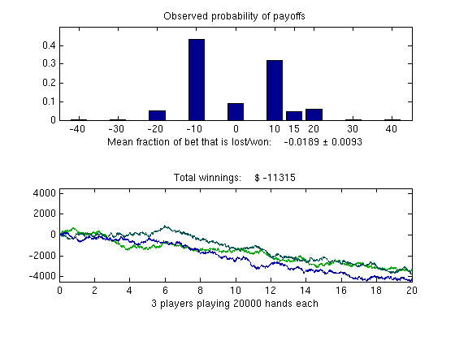
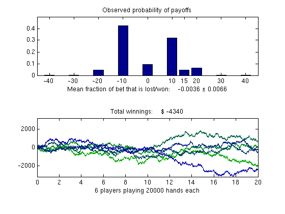

Customizing the Settings for the Demos in the Parallel Computing Toolbox™
This demo shows how to change the behavior of the demos in the Parallel Computing Toolbox™. There are at least two versions of each demo in the Parallel Computing Toolbox: a sequential version and a distributed version. The distributed versions will not run unless they can submit jobs to a scheduler, so the most important setting explained here is the configuration that the demos use to identify the scheduler to submit to.
If you are not familiar with the concepts of distributed computing, please read the documentation for the Parallel Computing Toolbox in the MATLAB® help browser.
For further reading, see:
Contents
Accessing and Changing the Default Configuration
The demos all use the default configuration when creating and submitting jobs. To be more specific, the demos use the scheduler identified by the default configuration. You can either use the Parallel menu item in the menu bar to view and change the default configuration, or you can use the defaultParallelConfig function to get and set the default configuration:
defaultParallelConfig()
ans = local
The configurations documentation contains the complete guide to managing your configurations.
Accessing the Current Demo Settings
All demo-related settings other than the default configuration can be obtained and changed via paralleldemoconfig. Running the paralleldemoconfig command without any input arguments gives us a structure with the current demo settings. We will examine these settings one at a time. Any changes that we make to these settings remain in effect for the duration of the current MATLAB session. If we want some changes to be applied every time MATLAB starts, we should put them into our startup.m file. First, we look at the current settings:
orgconf = paralleldemoconfig()
orgconf =
NumTasks: 4
NetworkDir: [1x1 struct]
Difficulty: 1
Changing the Number of Tasks
The number of tasks the demos create is stored in the NumTasks field. We can change it to a different value by using paralleldemoconfig.
paralleldemoconfig('NumTasks', 3); % Use 3 tasks.
Changing the Demo Difficulty Level
The total run time of most of the demos can be changed by a constant factor through the Difficulty field of paralleldemoconfig. The default value is 1.0, and the demos attempt to adapt their problem sizes so that they run in half the regular time when the Difficulty is set to 0.5 and twice the regular time when the Difficulty is set to 2.0. The Difficulty field can be set to any value greater than 0.
It should be noted that some of the demos perform a fixed amount of computation, therefore their run time cannot be controlled by the Difficulty field, and those demos issue a warning if they are run with a Difficulty value other than 1.0. Let's see how the sequential blackjack demo responds to changes in the difficulty level:
paralleldemoconfig('Difficulty', 0.5);
paralleldemo_blackjack_seq;
Elapsed time is 27.4 seconds
By looking at the graph of the total winnings, we can see how many people were playing in the simulation. Observe that when we set the Difficulty field to 1.0, we simulate twice the number of players we simulated when using a difficulty level of 0.5. Also notice that the Blackjack demo executes in half the time when run with Difficulty set to 0.5 when compared to the default value of 1.0.
paralleldemoconfig('Difficulty', 1.0);
paralleldemo_blackjack_seq;
Elapsed time is 55.1 seconds
Customizing the Network Directory
The NetworkDir field stores the name of a directory on a shared file system that the demos can use when they want to transfer input/output data between the client and the workers via the file system. The directory is specified in two different formats, one for the Windows® platform and one for UNIX® platforms. If our client and workers are only using one platform, we need to concern ourselves with only that field and we can safely ignore the other. Additionally, the directory permissions must be such that MATLAB can write to it, both from the client and the workers.
Assuming that the following two paths refer to the same directory on our file server, we can inform the Parallel Computing Toolbox of that correspondence:
pcdir = '\\mycomputer\user\subdir'; unixdir = '/home/user/subdir'; paralleldemoconfig('NetworkDir', struct('pc', pcdir, 'unix', unixdir));
Notice that we specified the Windows path as a UNC path and not in terms of mapped network drives.
If we do not have a shared network file system, we cannot run any of the demos that try to make use of it. The same applies if there is no directory that all the Windows machines recognize by one name and all the UNIX machines can recognize by another name.
Restoring the Original Settings
We do not want this tutorial to change the default demo settings, so we restore their original values.
paralleldemoconfig(orgconf);